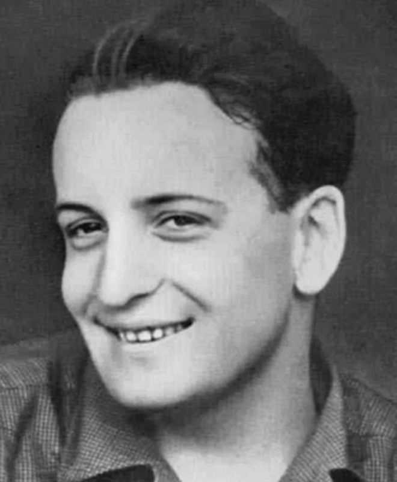
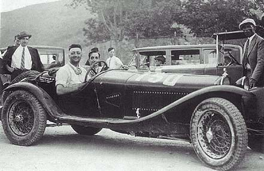
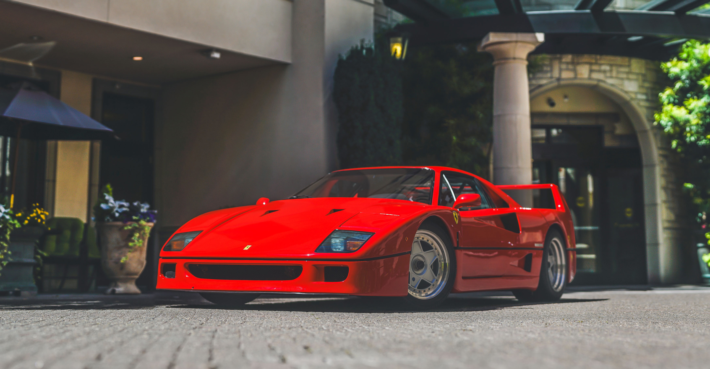
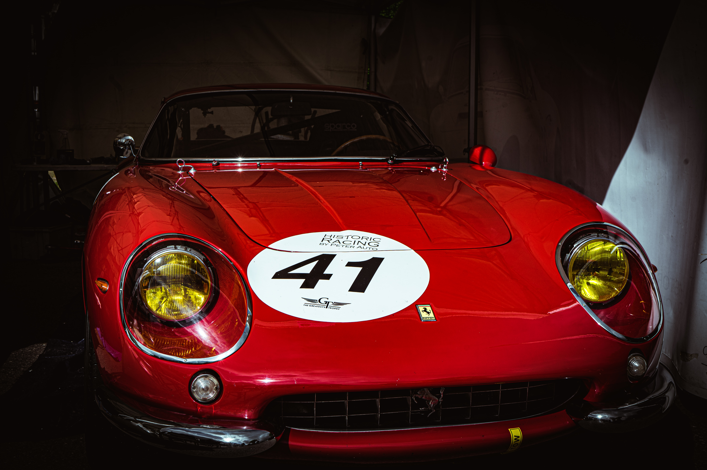
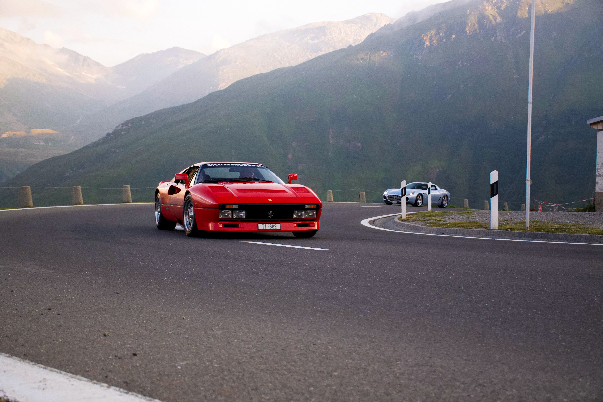
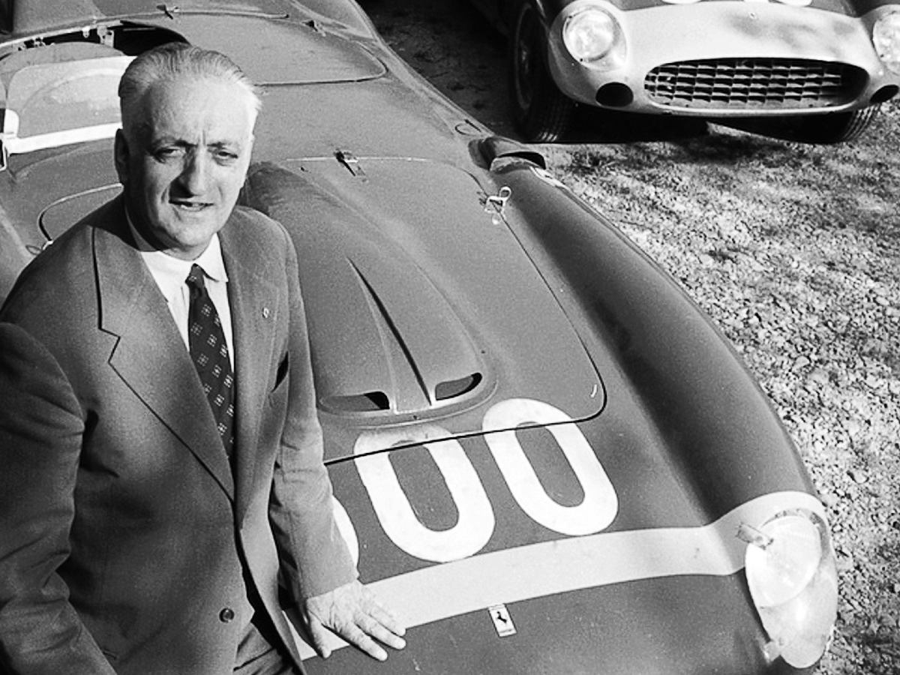

Enzo Anselmo Ferrari (20 de febrero de 1898 - 14 de agosto de 1988) fue un ingeniero, piloto de carreras y fundador de la famosa marca de automóviles Ferrari. Nacido en Módena, Italia, Enzo Ferrari es considerado una leyenda en el mundo del automovilismo y su legado perdura hasta el día de hoy.
Desde una edad temprana, Enzo mostró una pasión inquebrantable por los automóviles. Su fascinación por los motores lo llevó a estudiar ingeniería mecánica en la Universidad de Bolonia. Durante sus estudios, participó activamente en carreras de autos y comenzó a forjar su camino hacia el mundo del automovilismo competitivo.
En 1929, Enzo fundó la Scuderia Ferrari, que inicialmente funcionaba como un equipo de competición automovilística. La escudería pronto ganó reputación por su enfoque en la excelencia técnica y el rendimiento en la pista. Ferrari también colaboró con otros fabricantes de automóviles y diseñó motores para algunas de las marcas más prestigiosas de la época.
Aunque su verdadera pasión estaba en la ingeniería y el diseño, Enzo Ferrari también fue un talentoso piloto de carreras en sus primeros años. Sin embargo, después de un trágico accidente en 1931 que lo dejó fuera de las pistas, decidió retirarse como piloto y centrarse en la gestión y el diseño de automóviles de alto rendimiento.
En 1947, Enzo Ferrari estableció la marca de automóviles que llevaría su apellido, Ferrari. Su visión para la compañía era simple pero poderosa: producir automóviles de lujo y alto rendimiento que ofrecieran una experiencia de conducción inigualable. Los automóviles Ferrari rápidamente se ganaron una reputación por su belleza, velocidad y exclusividad.
Enzo Ferrari dirigió la compañía con determinación y pasión durante décadas. Sus automóviles dominaron las pistas de carreras y se convirtieron en símbolos de estatus para los amantes de los automóviles en todo el mundo. La marca Ferrari se ha mantenido fiel a la visión de su fundador y sigue siendo un ícono en la industria automotriz en la actualidad.
Enzo Ferrari falleció el 14 de agosto de 1988 a los 90 años. Su legado sigue vivo en cada automóvil Ferrari que lleva su nombre. Además, el equipo de Fórmula 1 de Ferrari, Scuderia Ferrari, continúa compitiendo en las carreras de Fórmula 1 como uno de los equipos más emblemáticos y exitosos de la historia.
La pasión, la innovación y la excelencia de Enzo Ferrari han dejado una huella indeleble en la industria automotriz y en el corazón de los fanáticos del automovilismo en todo el mundo.

Enzo Ferrari fue un apasionado piloto de carreras. Aquí lo vemos compitiendo en una carrera automovilística.

El icónico Ferrari F40, uno de los superdeportivos más famosos y emblemáticos de todos los tiempos.

El Ferrari 250 GTO, considerado uno de los automóviles más valiosos y codiciados del mundo.

El Ferrari 288 GTO, un automóvil de alto rendimiento y diseño impresionante.

Enzo Ferrari posando junto a uno de sus emblemáticos autos.

Uno de los modelos más exclusivos de Ferrari, LaFerrari, con un diseño impresionante y un rendimiento excepcional.